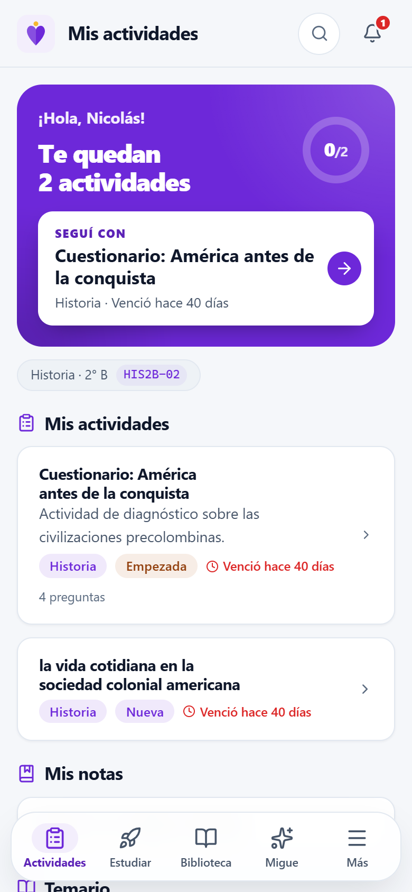
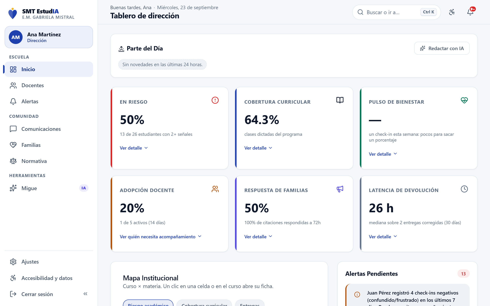
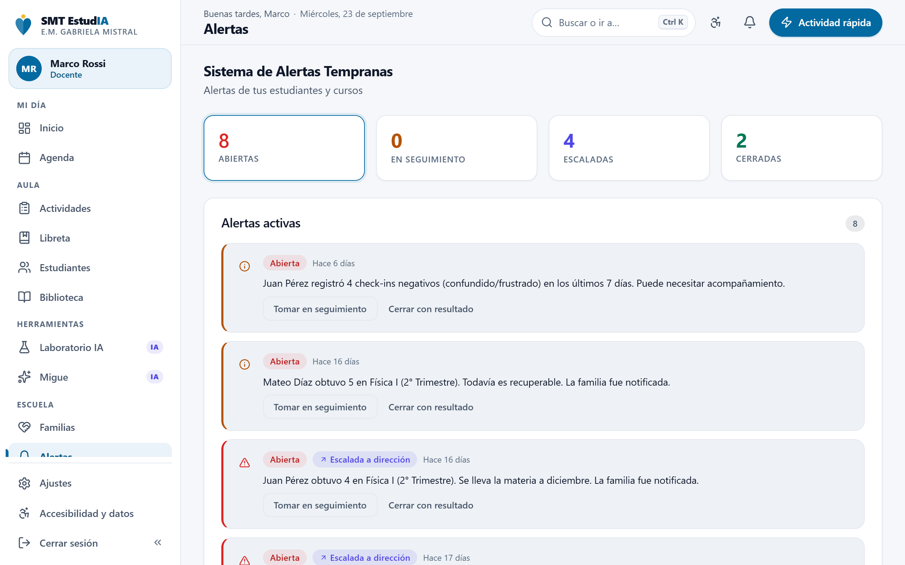
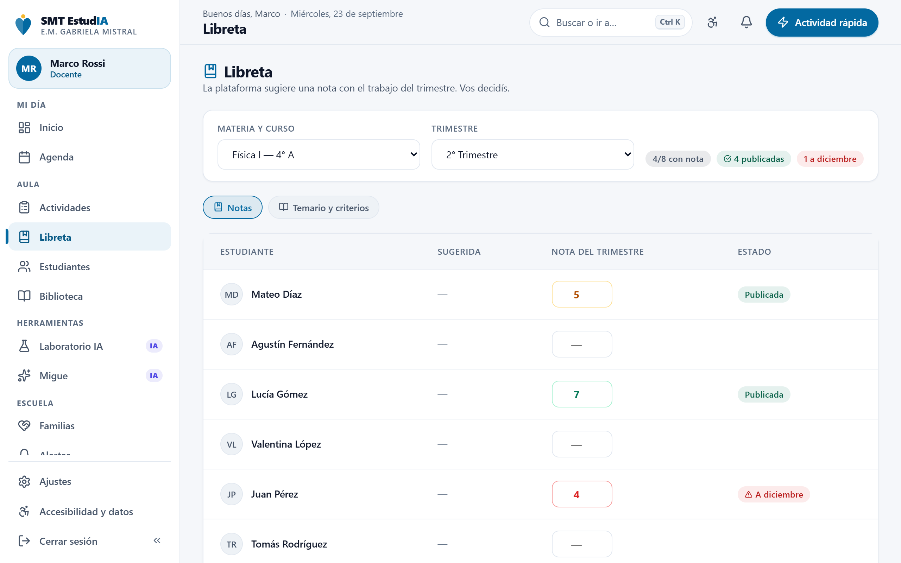
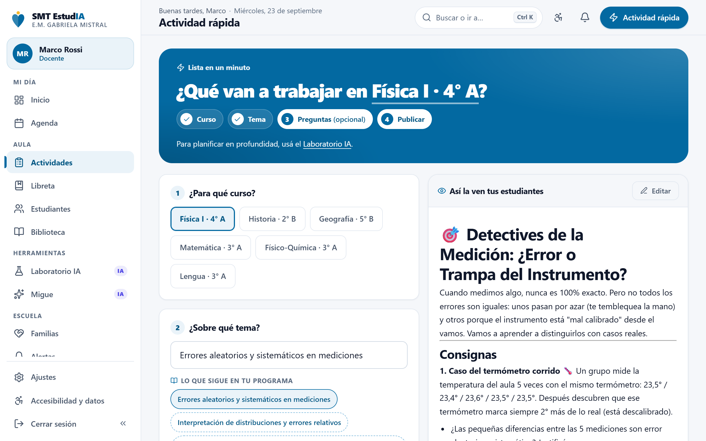
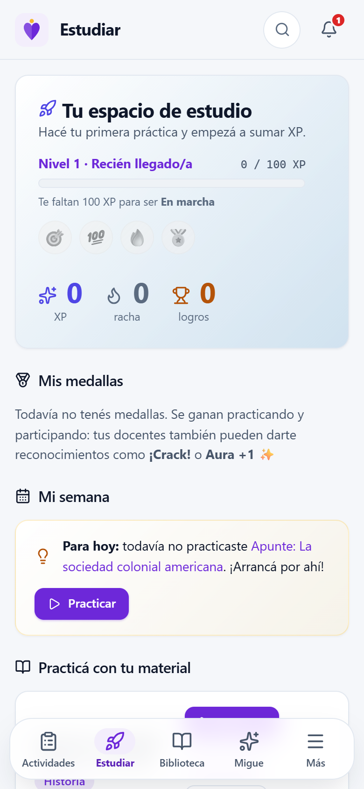
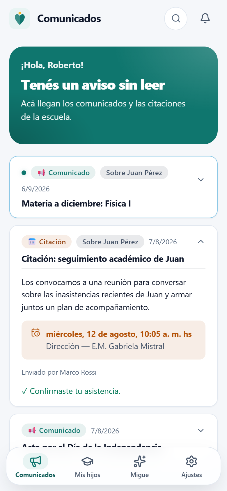
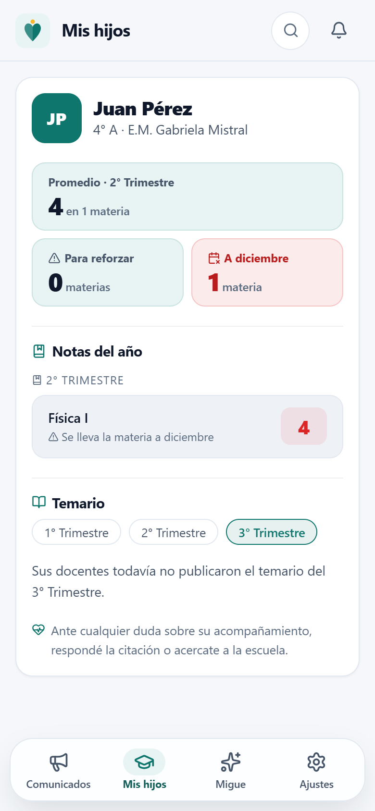

La plataforma con inteligencia artificial de las escuelas municipales de San Miguel de Tucumán: para gestionar la escuela, enseñar mejor y acompañar a cada estudiante.

SMT EstudIA reúne en un mismo lugar lo que hoy está repartido entre cuadernos, planillas, grupos de WhatsApp y la memoria de cada docente: qué se enseña, cómo le va a cada chico, cómo se siente y qué hace la escuela cuando algo no anda bien. Está en prueba piloto en 2° A de la E.M. Alfonsina Storni y 3° A de la E.M. Gabriela Mistral, con el material real de cada curso. Funciona en cualquier celular, con pocos datos, y cada escuela ve solo lo suyo.
El estado de la escuela sin pedir informes, y las alertas hasta que se resuelven.
Su día ordenado, actividades en un minuto, libreta y clase en vivo con su material.
Lo que tienen que hacer, práctica con IA y el material para leer sin descargar.
Avisos de la escuela, citaciones y las notas de sus hijos, a tiempo.
Escuelas y cuentas desde la plataforma, y el gasto de IA a la vista.
Los números se arman solos con lo que pasa cada día. Las alertas llegan, se siguen y se cierran con un resultado.
Ayuda a planificar, practicar y preguntar en clase, con reglas escritas de lo que no hace: no hace la tarea, no inventa y no guarda secretos cuando un chico está en riesgo.
Cada nota, aviso, señal de bienestar e intervención queda asentada con fecha, autor y resultado.




El docente da su clase como siempre y, cuando quiere, lanza una pregunta, una encuesta o una nube de palabras: los chicos responden desde el celular y los resultados aparecen en vivo, también en el proyector.
Elige un tema de su temario o un apunte de la biblioteca, lo proyecta y lo muestra en los celulares solo mientras dura la clase.
La IA arma preguntas sobre ese material en segundos, y el docente las lanza con un toque.
Reconoce a quien se destaca en el momento y, al terminar, ve quién participó, qué se entendió y cómo estuvo el clima.
Maqueta con datos de ejemplo.
La IA ayuda, no reemplaza: arma clases a partir del programa, actividades, evaluaciones, resúmenes y preguntas; las decisiones las toma el docente. Migue, el asistente de la escuela, responde con la normativa que cargó la dirección y dice de dónde sale.
Cada persona tiene un tope diario de uso, y cada consulta queda registrada.
Desde el celular, aun con pocos datos: qué tienen que hacer y cuándo vence, práctica con IA a partir del material de sus materias, la clase en vivo y Migue para entender un tema o contar cómo están. Lo que escriben se guarda solo, y si se corta internet, la entrega sale cuando vuelve la señal. Sin rankings: la racha y las medallas son personales.
Reciben en el celular los comunicados y citaciones de la escuela y confirman con un toque. Ven las notas y el temario de sus hijos, y les llega un aviso cuando una materia está en riesgo, mientras todavía se puede levantar. Solo ven lo que la escuela publicó.



Lo que un chico cuenta y preocupa llega a un adulto de la escuela el mismo día: por un check-in de cómo se siente o por algo que le dice a Migue. El seguimiento del equipo queda registrado y separado de lo que el chico puede leer.
La Municipalidad da de alta escuelas, cursos y cuentas desde la plataforma —los chicos y las familias entran con su DNI— y ve cuánto se usa y cuánto cuesta la IA, sin exponer a ningún estudiante.
SMT EstudIA no digitaliza la escuela: la conecta. El trabajo que los docentes ya hacen —planificar, evaluar, dar clase, acompañar— queda a la vista de quien lo necesita, cuando lo necesita. Dirección ve el conjunto, la familia deja de enterarse tarde, y ningún chico depende de que alguien se acuerde.